FLU - FLTK Utility Widgets
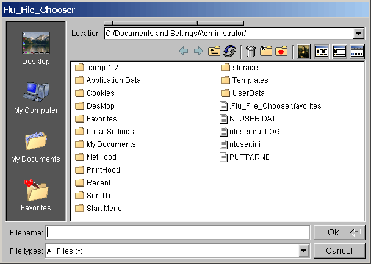
About
This is just a small library of FLTK widgets that I have been working
on for another application (VolSuite,
if you're interested). They are available under the same LGPL-compatible license as
FLTK. They are designed to work with FLTK 1.1.x and seem to work pretty well on most systems, although my
testing has been far from exhaustive. There is a configure/Makefile
included which should compile
on most *NIX/OSX distributions, as well as Cygwin and
MinGW.
I wrote the configure script by hand so don't
blame autoconf if it doesn't work, blame me. There are also project
files for Visual Studio 6 and Visual Studio .NET, as well as a
directory of many example files to exersize most of the widgets.
I don't work on the widgets much anymore, but if you find bugs, have
feature suggestions, or just a general question, feel free to contact
me directly (jbryan at osc dot edu) or via the FLTK mailing
lists (if it is a question whose answer everyone could benefit from).
Download
version 2.13: (tar.gz) (zip)
version 2.12: (tar.gz) (zip)
version 2.11: (tar.gz) (zip)
version 2.10: (tar.gz) (zip)
version 2.9.2: (tar.gz) (zip)
version 2.9.1: (tar.gz) (zip)
version 2.9: (tar.gz) (zip)
version 2.8.1: (tar.gz) (zip)
version 2.8: (tar.gz) (zip)
Screenshots/Descriptions/Demos
Following are a few screenshots from the
example/test programs, and some simple descriptions of the various
widgets with links to their individual class documentation as well as executable demos
for Windows.
Flu_File_Chooser
- A file/directory chooser that looks/acts much like the stock Win32 chooser, but spiffed up.
You can use the functions flu_file_chooser() and flu_dir_chooser() much like their fl counterparts.
This widget has been tested under linux, windows, and OSX and seems to be working well.
However I will not certify it as bug-free, so if you find any, please let me know.
Features include:
- choose single/multiple files OR directories
- choose single/multiple files AND directories
- chooser is resizable (unlike windows counterpart)
- forward/back directory history
- directory favorites (stored to disk)
- delete or rename files and create new directories (deleting in windows
moves to recyle bin by default, unless you SHIFT-DEL then it is deleted
explicitly)
- preview mode
- programmable preview capability
- view files in: list mode (normal), wide list mode (each entry takes up
the visible width of the chooser), and details mode
- each column is sortable/resizable in details mode
- programmable sorting routine can be provided instead of default
lexigraphic sort by filename
- tab-completion. if tabbing matches exactly one directory, a second tab
will cd to it. otherwise all matches are displayed, and exact matches
are copied into the filename input area
- can also enter absolute paths and "../"
- can filter files dynamically by typing a series of '|' and ';' delimited
patterns (e.g. "*.cpp;*.h") in the filename input area. can even use
more regexp-like filters (e.g. "file*.img.[1-4]?")
- programmable pattern filters "Description (pattern)" or just "pattern"
where "pattern" is either "*.xxx" or "*.{xxx,yyy,zzz}" (just like
Fl_File_Chooser). each pattern filter can be delimited by a tab
character '\t', or '|' or ';'
- Right-click context menu for renaming or deleting files/directories and
creating new directories
- context menu is programmable so you can add handlers for different files
- file icons/descriptions are programmable
Another screenshot...
And another...
<< Try the Windows demo >>
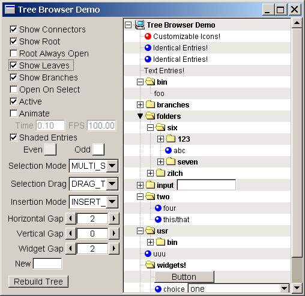
Flu_Tree_Browser - A
hierarchical data browsing widget. Features per-entry
customizable icons, animated expand/collapse, ability to embed widgets
in each entry, numerous prettifying parameters, search- and sort-ability,
node traversal routines, single and multi selection, drag and drop,
more-than-you-need callback events, and probably a few other things
that I am forgetting. Works pretty well with large numbers of entries,
and the per-Node memory footprint is around 92 bytes.
<< Try the Windows demo >>
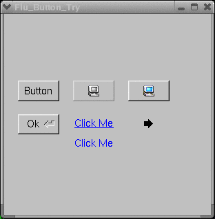
Three simple classes that extend Fl_Button:
- Flu_Button
- Just like Fl_Button except the button face color gets lighter when
the mouse enters, and its image is automatically desaturated when the
button is disabled.
- Flu_Return_Button
- Just like Fl_Return_Button except with all the benefits of Flu_Button.
- Flu_Link_Button
- This is a button that looks/acts like a hyperlink on a web page. The
cursor changes to a hand when the mouse hovers over the link, and
clicking invokes the regular FLTK callback.
<< Try the Windows demo >>
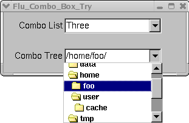
Two classes implementing your standard combo box (just like Fl_Choice
except the "input" area is editable). The callback is done when the
user picks an item or types in text. You can click and hold to choose
an item, or click once to pop the menu open, scroll a bit, then choose
an item.
- Flu_Combo_List - Just like
Fl_Choice except the input area is editable.
- Flu_Combo_Tree - Just like
Flu_Combo_List except you can display a tree instead of a list (using
Flu_Tree_Browser).
<< Try the Windows demo >>
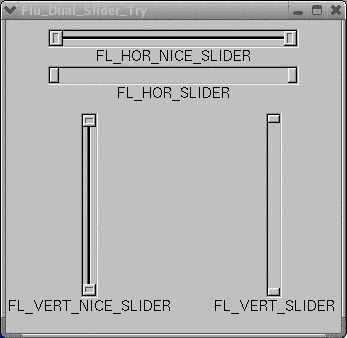
Flu_Dual_Slider - This class is essentially an Fl_Slider but with 2 control areas, one for
the high value and one for the low value. This widget is extremely useful
for manipulating a range of values instead of a single value.
<< Try the Windows demo >>
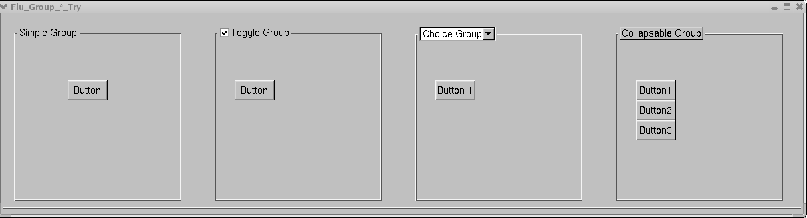
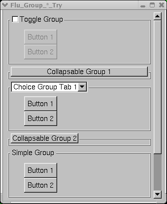
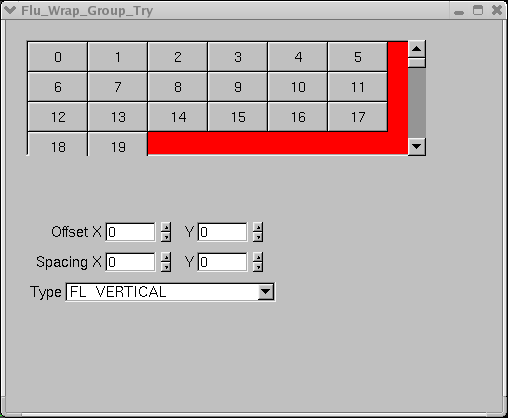
Five classes that exend the behavior of Fl_Group:
- Flu_Simple_Group -
Fl_Group...but with a spiffed up aesthetic appeal.
- Flu_Toggle_Group - Looks
like Flu_Simple_Group with an Fl_Check_Button as the title. Toggling
the title will activate/deactivate all children.
- Flu_Choice_Group - Looks
like Flu_Simple_Group with an Fl_Choice as the title. Works like
Fl_Tabs but looks more like its Windows/OSX counterparts.
- Flu_Collapsable_Group
- Looks like Flu_Simple_Group with an Fl_Button as the title. Clicking
the button will expand/collapse the group. Frame rate and collapse time
are customizable.
- Flu_Wrap_Group - This
class provides an alternative to Fl_Group that automatically
arranges the children either left to right and top to bottom,
or top to bottom and left to right, within the available
size of the group, with a scrollbar turning on if they don't all fit. Best
used with fixed and equally sized children.
<< Try the Flu_*_Group Windows demos First Second Third >>
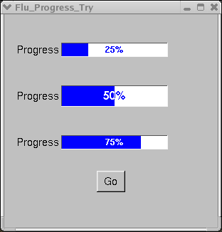
Flu_Progress - Yet Another
Progress Bar. Derived from Fl_Slider, the only real difference here is
the nifty way the color bar glides through the percentage.
<< Try the Windows demo >>
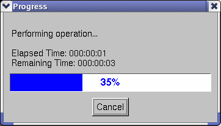
Flu_Progress_Meter -
This widget uses Flu_Progress to report on the progress of an operation. It
automatically estimates time to completion based on how frequently the
progress is updated. An extra callback is invoked if the cancel button
is pushed.
<< Try the Windows demo >>
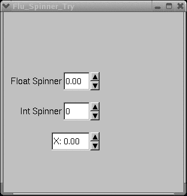
Flu_Spinner - Your everyday
spinner widget. This one is derived from Fl_Valuator and features an
editable numeric input and customizable repeat delay and frequency for
the spinner buttons. Click, click-and-hold, or click-and-drag to change
the value.
<< Try the Windows demo >>
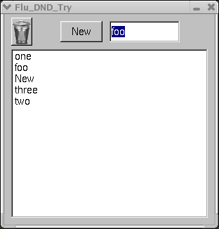
Flu_DND - This class extends the
behavior of FLTK's Drag 'N Drop mechanism to provide a bit more
flexibility in determining what kind of item is being dragged and
whether it is allowed to be dropped. You can create specific DND
objects, allowing classes derived from Flu_DND to discriminate between
which objects are "allowed" to be dropped on them. In this demo, you
can drag text from the input field or the "New" button to the browser
and drop it in. You can drag an item in the browser, drop it in the
browser and it moves to the bottom of the list. You can also drag an
item from the browser to the trashcan, at which point the trash icon
changes, and dropping it in the trash removes it from the browser.
The trash icon does not seem to change in Windows, and the whole
demo does not work correctly on OSX (don't know why...), but on Linux
it works great!
<< Try the Windows demo >>
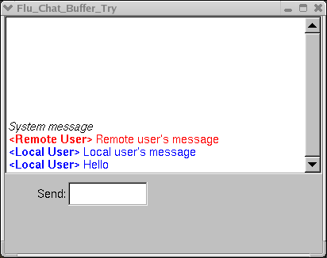
Flu_Chat_Buffer - A very
simple browser displaying chat-like messages in different colors.
<< Try the Windows demo >>
In addition to the above are the following
widgets/files:
- Flu_Enumerations.h
- Your vanilla enumerations file. I follow the FLTK convention of
int-enums in the global scope (consistency - not personal preference
;-).
- flu_export.h -
Stupid Windows DLL macros
- Flu_Helpers.h - A
few functions that have come in handy:
- fl_exit()
- Convenience routine to hide all open windows. This will (eventually) cause FLTK to exit
- fl_Full_Find_In_Menu
- Searches an Fl_Menu for an entry with a given path name (e.g.
/path/to/menu/entry), returning its index or -1 if it's not there
- fl_Find_In_Menu
- Similar to the above, but doesn't use a full path name, and returns
the first match
- fl_Show_Window_Callback
- Convenience callback for an Fl_Widget to show an Fl_Window. Pretty
common thing to do actually...
- fl_Hide_Window_Callback
- I'm sure you can figure out what this one does
- fl_Hide_Window_And_Set_User_Data_Callback
- Useful when writing compact dialogs in-line. Convenience callback for
an Fl_Widget to hide an Fl_Window. Before the window is hidden,
its user_data() field is set to the widget that invoked the callback.
The user_data() can then be used to determine which widget closed the
window.
- Flu_Int_Input - This
widget simply extends Fl_Int_Input to allow getting/setting the widget
value as integers instead of strings. e.g. input->ivalue(27)
- Flu_Float_Input -
This widget simply extends Fl_Float_Input to allow getting/setting the
widget value as floats instead of just strings. e.g. input->fvalue(3.1415926)
- Flu_GL_Window - This
widget is derived from Fl_Gl_Window, and makes some GL things easier.
For example, you can register GLUT-like callbacks to the widget, and
opt for mouse coordinates to be reported in cartesian coordinates
instead of window coordinates. There is also a static callback invoked
for each new GL context which is useful for some API things, such as
making sure each context has the entry points for GL extensions in
Windows.
- Flu_Label - This widget
just makes it easier to make stand-alone labels. Setting the value()
copies the text to a local buffer, so you don't need to worry about
aliasing.
- Flu_Output - This widget
simply extends Fl_Output to allow getting/setting the widget value as
integers and floats in addition to strings. e.g. ivalue() and fvalue().
- flu_pixmaps.h - A
few XPM images compatible with Fl_Pixmap. Nothing special.
- Flu_Separator - A
simple widget that draws a separator line using the current box type.
You can choose horizontal or vertical.
Documentation
Doxygen
style developer documentation is available here.